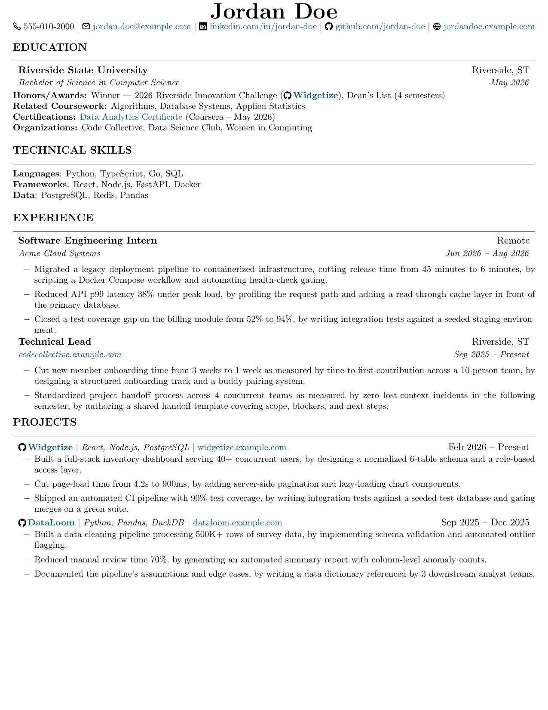
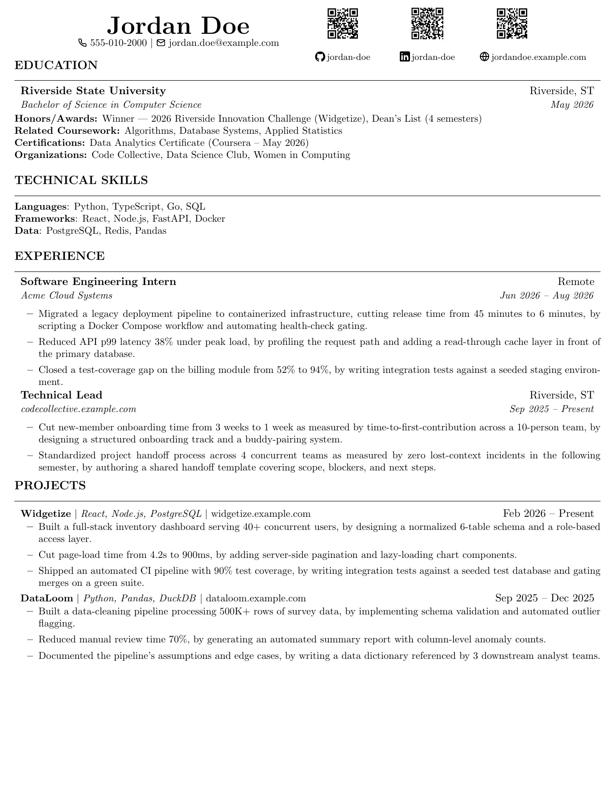
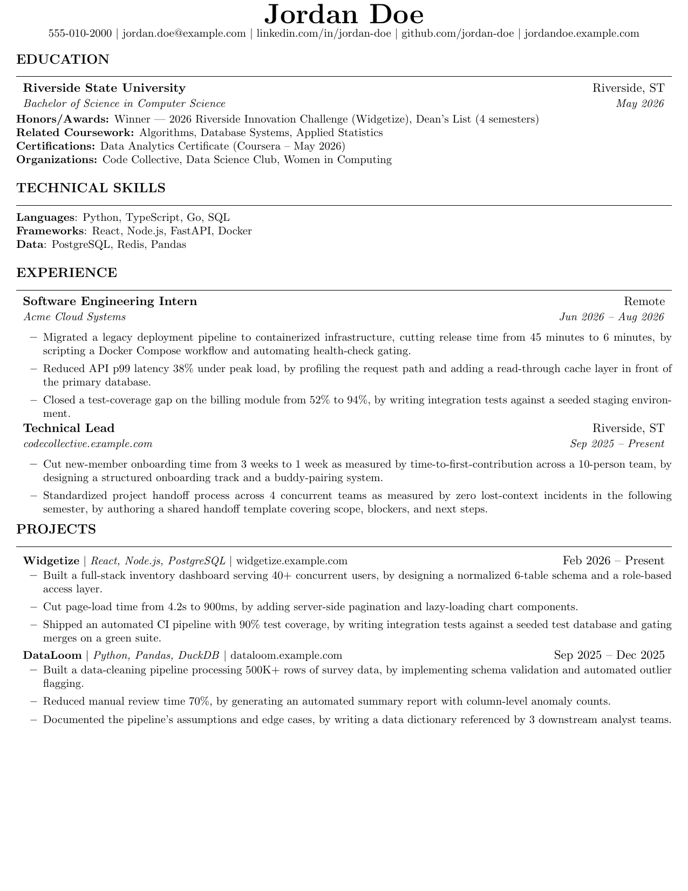

Digital
Colorlinks, an icon contact row, and clickable project names via \projectTitle. Built for on-screen PDF viewing.
a builder106.github.io subproject
A LaTeX system for maintaining several role-targeted resumes, each in three presentation variants, without the content drifting out of sync between copies.
All three are compiled from the same shared assets under template/assets/.
Only the presentation macros differ.

Colorlinks, an icon contact row, and clickable project names via \projectTitle. Built for on-screen PDF viewing.

Hidden links, a two-column header with QR codes standing in for anything you can't click on paper. Built for printing.
Download PDF
Plainest variant: no icons, no links rendered visibly, nothing an applicant-tracking parser can trip on.
Download PDF
education-common.tex, certs.tex, and
experience-bank.tex hold the content that repeats across
every role and variant: the school line, cert links, and any
Experience entries that don't change per role. Every resume file
pulls them in with \input{}. One edit propagates
everywhere instead of needing a find-and-replace across a dozen files.
\newcommand "lengths" don't support arithmetic
\newcommand{\myGap}{11pt} defines a text macro, not a
real length register. \vspace{2\myGap} doesn't multiply;
it string-concatenates the text 11pt after a literal
2, producing the dimension 211pt, nearly 3
inches, instead of the intended 22pt. It compiles
without a single warning. The fix is \newlength plus
\setlength wherever a spacing unit needs to be multiplied
by a variable coefficient.
A pdflatex() shell function that deletes
.aux/.log/.out after each run
only loads in an interactive shell. It never sources in CI, in a
Docker build step, or in any tool that spawns a non-interactive
shell, so byproducts pile up silently there. The reliable fix is an
explicit find -delete sweep after every compile.
A shared-asset edit that adds two lines to Education can push an
already-tight resume onto a second page somewhere else entirely.
Sweeping pdfinfo file.pdf | grep Pages across every
variant of every role after any edit catches this before it ships.
Full write-up, including the content-parity rule and the three-variant convention in detail, is in the README.